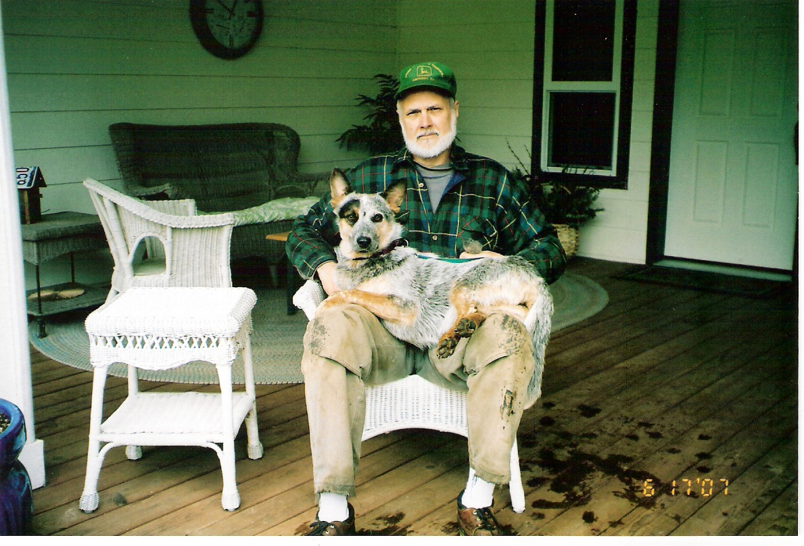

[Previous entry: "Supreme Court further limits first amendment in "Bong Hits 4 Jesus" case"] [Main Index] [Next entry: "Partisans of Vilna/The Girl From The Forest"]
06/28/2007 Archived Entry: "Knitters' lore/dog tales"
AN OLD BIT OF KNITTERS' LORE says that if you secretly knit a strand of your own hair into the fabric, the person you give the garment to will be bound to you forever. I thought about that the other day as my needles moved through cables and lace at Cabin Sweet Cabin. It occurs to me that anyone I ever give a hand-knitted garment to will be eternally bound to four dogs. Plus any fosters that happen to be around at the moment.
If you're a cat person, you definitely don't want a sweater or a scarf from me.
Speaking of foster doggies, let's have some more good news. Remember Frosty, the terrified young cattle dog who came to me after life in a horse trailer? She was, as shelter workers described, "like a wild coyote." Totally unsocialized to people and jumpy at any new experience.
Well ... :-) :-) :-)

Frosty now has a forever home. And the phrase "lucky dog" comes to mind. Eighty acres. A full-time mom and dad (experienced cattle dog owners). It's the life, wouldn't you say?
Posted by Claire @ 04:59 PM CST
Link